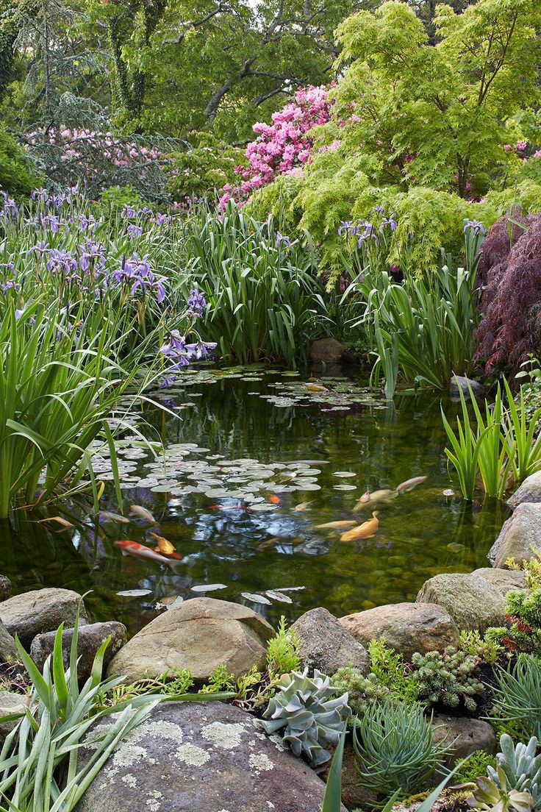

Welcome to UrbanLeaf
At UrbanLeaf, we’re passionate about helping you cultivate a thriving garden. Dive into our expert tips and tricks for a healthier and more beautiful garden. Use the navigation above to explore different gardening topics.
Watering Tips
Effective watering is crucial for a flourishing garden. Here are some key tips to keep in mind:
- Water Early in the Morning: This helps reduce evaporation and ensures plants get enough moisture before the heat of the day.
- Water at the Base: Direct water to the base of the plants to prevent fungal diseases and ensure the roots receive adequate hydration.
- Check Soil Moisture: Use a soil moisture meter or your finger to check if the soil is dry before watering.
- Water Deeply and Less Frequently: Encourage deep root growth by watering deeply and less often.
Spray Tips
Sprays are useful for pest control and plant care. Here’s how to use them effectively:
- Choose the Right Spray: Select sprays that are suitable for your specific needs, whether for pest control or disease prevention.
- Follow Instructions: Adhere to the manufacturer’s guidelines for application rates and timing.
- Test on a Small Area: Before applying to your entire garden, test the spray on a small area to ensure it does not harm your plants.
- Apply in the Evening: Apply sprays in the evening or early morning to avoid the heat of the day and reduce the risk of burning plants.
Soil Tips
Healthy soil is the cornerstone of a successful garden. Here are some tips for improving and maintaining soil health:
- Test Your Soil: Perform a soil test to understand its pH and nutrient levels. This will guide you in making necessary amendments.
- Add Organic Matter: Enrich your soil with compost, leaf mold, or well-rotted manure to enhance its structure and fertility.
- Avoid Over-Tilling: Excessive tilling can damage soil structure. Use minimal tillage to preserve soil health.
- Use Cover Crops: Plant cover crops to prevent soil erosion, improve nutrient content, and enhance soil structure.
Rain Tips

Managing rain effectively is essential for maintaining a healthy garden. Here are some tips:
- Use Rain Barrels: Collect and store rainwater for future use. This helps conserve water and reduces runoff.
- Improve Drainage: Ensure proper drainage in your garden beds to prevent waterlogging and root rot.
- Adjust Watering Schedule: During rainy periods, reduce your regular watering to avoid overwatering.
- Protect Soil from Erosion: Use mulch and ground covers to protect soil from heavy rain and reduce erosion.